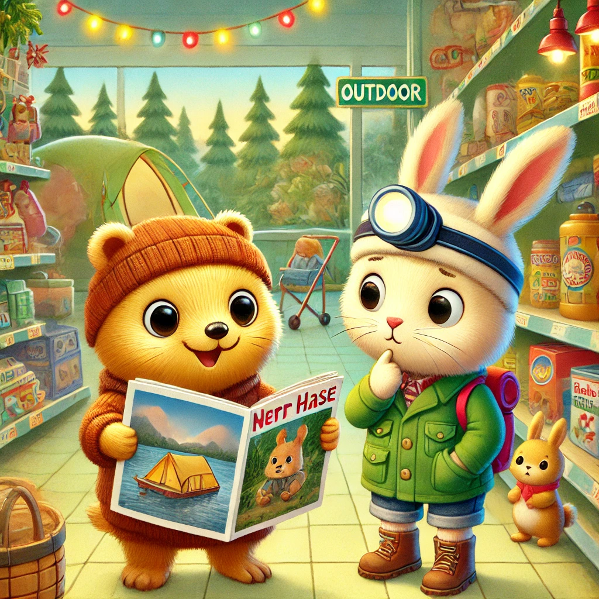
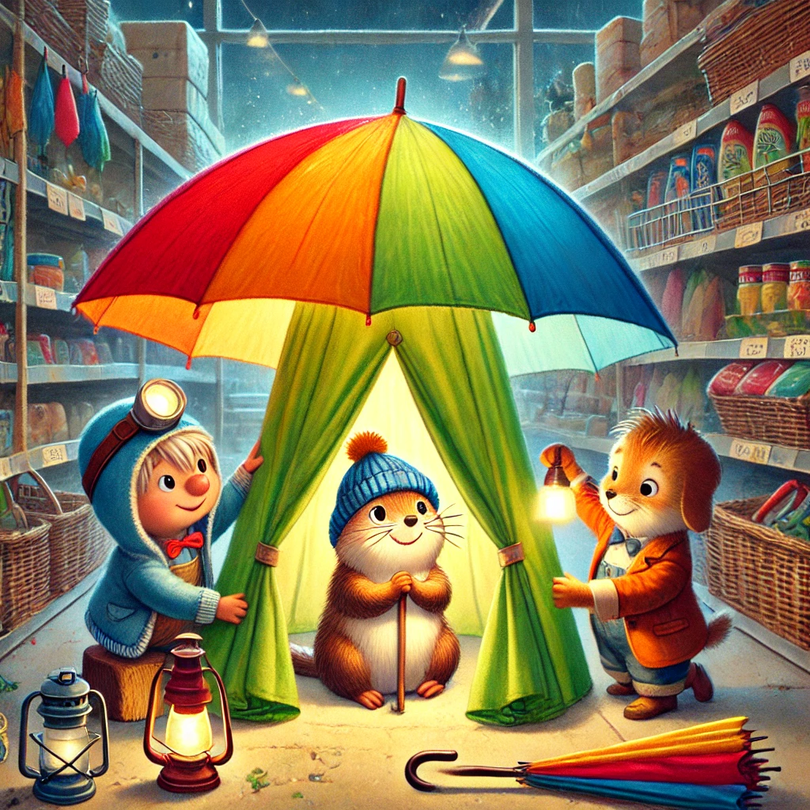

Es war einmal ein Wiesel namens Winnie, das oben auf dem Knabbereienregal eines Supermarkts in Leknes auf den Lofoten wohnte. Eines Tages als Winnie wieder durch das Zeitschriftenregal blätterte, blieb sie an einem bunten Foto hängen. Es war eine Anzeige: "Zelten unter den Sternen. Buche heute noch einen Flug nach Italien." Winnie konnte einfach nicht weiterblättern. Sie rannten geradewegs zu Biep, um ihm davon zu erzählen.
Biep war ganz begeistert: lass uns das machen! Als sie Herrn Hase in ihren Plan einweihten, zögerte dieser: "Das sieht toll aus, aber fliegen? Nach Italien? Wir sind doch so klein und die Welt ist so groß. Und es ist eine weeeeite Reise von den Lofoten."
Winnie hatte in ihrer Begeisterung gar nicht daran gedacht, wie weit weg Italien war. "Wie weit denn?" Wollte sie wissen. "Mindestens ein ganzer Tag. Eine Fähre, ein Flug, noch ein Flug und dann noch ein Flug. Größe Flughafen, auf denen man verloren gehen kann und mitten in der Nacht aufstehen." Winnie hatte die Lofoten nie verlassen und es wurde ihr mulmig. Gleichzeitig wurde sie aber auch traurig. Sie hatte sich vorgestellt, wie die drei im Zelt liegen und sich Geschichten erzählen würden.
Biep, pragmatisch wie immer, rettete den Tag: "Aber wir müssen doch gar nicht nach Italien, um zelten zu können. Lass uns hier ein Zelt bauen. Urlaub in der Outdoor-Abteilung!" Winnies Gesicht hellte sich auf. "Woraus bauen wir denn ein Zelt?"
Herr Hase hoppelte ohne Vorwarnung los und verschwand in Richtung Outdoor-Abteilung. Winnie und Biep folgten ihm. Dort angekommen fing Herr Hase an, Regenschirme aus dem Regal zu ziehen, sie aufzuhalten und sie zu einer Kuppel zusammenzuschieben: rote und blaue und grüne und gelbe. Als er damit fertig war, nahm er sich zwei Taschenlampen und verschwand in der Kuppel.
Winnie und Biep krochen durch den kleinen Eingang, den Herr Hase freigelassen hatte. Herr Hase hatte die Taschenlampe angeschaltet und es schimmerte in allen Regenbogenfarben. Winnie und Biep staunten und quiekten vor Freude. Das war besser als Italien!Die drei verließen ihr Zelt an diesem Tag nur noch, im Proviant zu kaufen und Decken zu holen. Sie erzählten sich den ganze Tag und den ganzen Abend Geschichten. Sie knabberten Chips und schliefen urlaubig, zeltig und zufrieden ein.